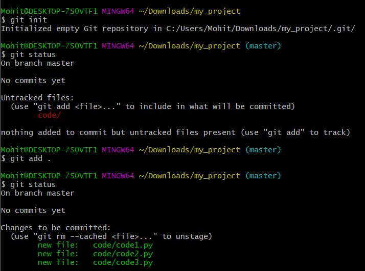

Version control (VC) is basically needed for any file(s) that will be maintained for a long time (read, multiple editing process) and/or accessed by multiple people (in collaboration). If you have such a file or a set of files (as a project), you will agree the necessity to track the changes. VC tries to help us with the same 🆒
Now comes the question of what can be tracked and how? A very simple distinction of different tools available for VC can be introduced efficiently, if we look at them from the lens of what type of data they can "version control". Such as,
Code: if you want to maintain just the code files, GIT is the defacto answer. There are several GIT based service providers, such as GitHub, whose platform can be used (for free) to maintain a git repository.
Data and ML Model: in contrast to GIT, that was developed to maintain relatively small sized files, we need something different if we want to handle big files like datasets or ML/DL models. Enter DVC (Data Version Control), an GIT extension that directly connects the data storages (cloud or local) with the git to maintain data, model and code at the same time!
We will now go through some of the tools/services for version control in detail.
GIT
Introduction
In simple words, GIT is a system designed to track changes in your file. True story, it was developed by none other but the creator of Linux, yes, Linus Torvalds in 2005! The story goes something like this -- while he was developing the linux kernel along with other kernel developers, he found it troublesome to maintain, track and handle conflicting (overlapping) pieces of codes. So he ended up coding the GIT system as a side project, just to help him and his fellow developers maintain linux kernel in a more efficient manner! Now, isn't that a cool side project 😎. You can read more about GIT and the history here.
Some of the popular and free services are GitHub, Gitlab and BitBucket. While they differ by UI and add-on functionalities, the core system (Git) used by all of them is the same. Hence if you learn the basic Git commands once, you can use any of the services mentioned above. That is why we will limit ourselves to learn Git the old school way i.e. via GIT bash commands, and leave the fancy UI or tool based operation as an exploration activity for the interested audience.
Before we go into the command and syntax, we need to be clear about certain topics to better appreciate Git. These are,
Where to download Git? Git is free and available here. Download the latest stable version as per your OS.
How do we use Git? After downloading Git (and specifically in Windows), from any directory in file explorer, on right click, you should get the option to open either "Git bash" or "Git GUI". For this article, we will use Git bash, as that's how real developers roll 😤 (jk)
What is Git Bash? It is something similar to command prompt in windows or terminal in linux, but something specifically designed for Git. To perform any Git related operation, we will use the Git bash.
What is the life cycle in Git? Basically any file in a git repository typically goes through three states. These are, (1) working state: the initial stage, where you have created a git repository and git is just looking at the files to note what has changed. (2) staging state: the second state where you mark certain files that should be commited, and (3) commit state: where you finalize the changes made to the files and commit them to the Git's history. Basically, this will create a version of your code and persist it for future reference.
What is local vs remote instances? Local instance is a git repository present in your local computer, and on the other hand, remote instance is the common server used to upload the modifications of the local instance. This is done so that there is a centralised repository from where everyone in the team can pull or push the latest code.
What are branches in Git? Branches are like parallel universes in Git. We can spawn off new branches anytime and from any other branch. By doing so we create a fork within that branch, where the developer can do whatever they want to do. Finally, after relevant commits/changes, the forked branch is merged back to their original branch using merge request.
What is a merge request and merge conflict in Git? Merge request is a request raised by the developer to the maintainer of the Git remote repository, asking them to merge the two branches. The maintainer may want to perform final set of validations before accepting the merge request. It may also happen that the same lines in the same file has been modified in both the branches, this will then lead to a merge conflict. Resolving merge conflict can range from easy to highly complex based on how many files has been affected. To resolve a merge conflict, we will modify the affected lines and then create a new commit.
Now, let's take a practical approach of learning Git by role-playing an example to learn the basics. Suppose you are working on a big project that requires mulitple modifications per day. TO efficiently maintain the project, you are looking for a tool that will help to keep track of the changes made in the project, by recording the line wise modification made in the files in the project. For this you want to explore GIT and test if it will make your life easier or not. So, let's get stated with the exploration! 😀
Initializing the Git repository: As we discussed, Git helps in tracking the changes made in a file. On top of it, it's easy to scale it up and track a complete folder that contains hundreds of files! For reference, suppose you have already created a python project and want to track the changes in any of the files present there. To do so, just go to the main directory of the project and initialize git by using command git init. This will mark that directory as a git repository. Next, if you run git status, it will show you an overview of the project and all of files. Note, by default Git keeps a look out at all of the files within the directory and show when any of the files have changed.
Staging files: You are going through the project file by file, making modifications as needed. Once you are happy with any file (or think that it is done), you can add that file to the staging area by command git add <file_name>, or if you want to stage all of the files at one go, do git add .. Now if you run git status again, you can see the files names are in green. This means these files are staged!

Example for initializing the git repository to tracking the files.
Commit: Now, suppose we just completed one small task. It would be a good idea to take a snapshot of our current code and save it. This can be done by git commit -m "your message", wherein you are asking git to commit all of the changes added in the staging area. This commit can be thought of as a unique snapshot of your code with the commit message as your description. Note, Git also generates hex code that is unique to each commit, that acts as the commit identifier. Your description is just a human readable piece of informance for us mere mortals 😀
Push: Note, all of these modifications has been done on your local instance, and to publish these to the world, we need to push the code to the remote instance. We can push our latest commits to the remote server by git push origin master. Note, here git push signifies we want to push the code, origin denotes the remote server and master denotes the branch of origin on which we want to push.
And that's it! We have covered most of the fundamental aspects of using git!
One important aspect to remember is that, we should refrain from committing directly to the master branch. Instead whenever we are planning to do some modifications, we should checkout to a new git branch (by using git checkout -b <branch_name>), do the modifications there, push that particular branch to remote and then create a merge request. This is just a good practice followed when working with a team!
Note
It may so happens that you only want to certain few files and not all of them. This can be done by creating a .gitignore file and placing it in the root directory. Within the file, add the relative (from root directory) path of all the files or folders you want the Git to ignore. For example, data/input.csv or data/* are respectively the examples to exclude one file or the complete folder from Git's tracking system.
GIT Snippets
A consolidation of some of the most helper code snippets for GIT.
The basic git commands
Listing down some of the most basic GIT commands, that you should definitely know about. Most of them are references from the above theory part.
1 2 3 4 5 6 7 8 910111213141516171819202122
# list all local branchesgitbranch# list all remote branchesgitbranch-r# create a local copy of a remote branchgitcheckout--trackorigin/branch_name# show the remote linksgitremote-v# add a new remotegitremoteaddnew_remotegit@github.com:User/UserRepo.git# pull the latest code from "master" branch of "origin" remote servergitpulloriginmaster# checkout to an existing branchgitcheckoutmain# checkout to a new branchgitcheckout-buse_bert_model# after performing some changes, add files to staging state gitadd.# commitgitcommit-m"added bert model"# push the branch to remotegitpushoriginuse_bert_model
Modify config to add email and name
1 2 3 4 5 6 7 8 91011
# Check the value of the configgitconfig--getuser.emailgitconfig--getuser.name# Add usernamegitconfig--globaluser.name"FIRST_NAME LAST_NAME"# Add emailgitconfig--globaluser.email"MY_NAME@example.com"# For local modification (for a git within a directory), use --local instead of --global# mode details: https://support.atlassian.com/bitbucket-cloud/docs/configure-your-dvcs-username-for-commits/
Publishing to Github using APIs (Python)
Publishing (adding files for instance) to Git is quite easy using the local CLI tool and/or Github tools or UI. We have already discussed how to do this using CLI. But what if you are creating your own application and need to do the same using Github APIs? This snippet is a python based function that adds a new file to your git repo, commits and publishes it!
Note, this is not as simple as single API call, for detailed information on what happens behind the scene when you commit and push, I will suggest this article.
You will need to create a personal token from github using this link. Store that as config['Github']['personal_token'] for this function to work. Note, the function takes config as parameter input.
# function to publish new content to Githubdefpublish_to_github(config,content,remote_path,commit_message,repo='test',user='imohitmayank',branch='main',name="Mohit Mayank",email="mohitmayank1@gmail.com"):""" Function to publish new content to Github Parameters ----------- config: dict with `config['Github']['personal_token']` containing your Github personal token content: string content you want to push to Github remote_path: path wrt to remote, where you want to save the content to; include the file name commit_message: message for commit """# Step 1: Get the SHA of the branch url=f"https://api.github.com/repos/{user}/{repo}/branches/{branch}"header={'Authorization':f'token {config["Github"]["personal_token"]}'}r=requests.get(url,headers=header)last_commit_sha=r.json()['commit']['sha']print("Step 1 Done: SHA fetched.")# Step 2: Create a bloburl=f"https://api.github.com/repos/{user}/{repo}/git/blobs"header={'Authorization':f'token {config["Github"]["personal_token"]}'}body={"content":content,"encoding":"utf-8"}r=requests.post(url,json=body,headers=header)utf8_blob_sha=r.json()['sha']print("Step 2 Done: Blob created.")# Step 3: Create a treeurl=f"https://api.github.com/repos/{user}/{repo}/git/trees"header={'Authorization':f'token {config["Github"]["personal_token"]}'}body={"base_tree":last_commit_sha,"tree":[{"path":remote_path,"mode":"100644","type":"blob","sha":utf8_blob_sha}]}r=requests.post(url,json=body,headers=header)tree_sha=r.json()['sha']print("Step 3 Done: Tree created.")## Step 4: Commit the changesurl=f"https://api.github.com/repos/{user}/{repo}/git/commits"header={'Authorization':f'token {config["Github"]["personal_token"]}'}body={"message":commit_message,"author":{"name":name,"email":email},"parents":[last_commit_sha],"tree":tree_sha}r=requests.post(url,json=body,headers=header)new_commit_sha=r.json()['sha']print("Step 4 Done: Changes commited")## Step 5: update the HEADurl=f"https://api.github.com/repos/{user}/{repo}/git/refs/heads/{branch}"header={'Authorization':f'token {config["Github"]["personal_token"]}'}body={"ref":"refs/heads/{branch}","sha":new_commit_sha}r=requests.post(url,json=body,headers=header)print("Step 5 Done: HEAD updated")print("------ ALL DONE! ------")
Ignore files/folders
.gitignore file in the root directory, contains the name of files and folders which should not be tracked by GIT.
123456789
# ignore personal.txtpersonal# ignore everything within "pic" folderpic/*# ignore everything except a specific file within a folder!pic/logo.pngpic/*
Untrack file/folder and delete them from GIT
To untrack the files or folders, we can create .gitignore file and add respective info.
To delete the files or folders form GIT (and not from local system), we can delete them from the cache as suggested here,
12345
# for a single file:gitrm--cachedmylogfile.log# for a single directory:gitrm--cached-rmydirectory
Stash partial changes
Suppose you have made some partial changes and the remote is updated with a new commit. Now you cannot commit your local change (as its partial) and you need to pull the latest code from remote (as its update). git stash comes to the rescue, example below.
12345678
# stash away the current partial changesgitstash# pull the latest code (or any other operation)gitpulloriginmaster# pop the stashed partial changesgitstashpop
Reset to the last commit
You may want to revert back to the very last commit, discarding every modification from then. This could be because you were playing around with the code or doing some minor experiments. In either cases, you can do this by,
1
gitreset--hardHEAD
Otherwise, to just unstage the files which were staged by git add,
Several VC platform have a maximum file size limit, for example Github has 100MB file size limit.
That said, there are ways to bypass such limitations, once of those are Git LFS i.e. Large file system.
Using Git LFS we can track large files and it internally takes care of storing them as LFS objects. This way we can store our dataset or models in the git repositories as well.
Below is an example track a model in a repository using Git LFS.
# install git lfs
git lfs install
# track a file
git lfs track "model/model.pkl"
# or track a folder
git lfs track "model/**"
# add the git attribute to reflect changes
git add .gitattribute
# migrate the changes i.e. replace files with pointers (for current branch)
git lfs migrate import --include=='model/**' --verbose
# or for all branches
git lfs migrate import --everything --include=='model/**' --verbose
# show the files which are tracked
git lfs ls-files
Setting up multiple Github accounts on a single machine using SSH
It is possible to setup multiple Github account on a single machine using SSH. This is useful when you want to work on multiple projects which are hosted on different Github accounts. For example, you might have one personal and one work account that you want to use on your machine. You can refer this for more details, and I will also summarize the steps below.
The process is quite simple, first we will generate two SSH keys (for two accounts) and save them on our machine. Next, we will create a global ssh config file to map the two keys with github. Then, we will add the public keys to the respective github account. Finally, we will create a git config file for each local project and add the user details. Let's get started.
Create SSH keys using the command shared below, make sure to replace the email address with your own. You will be prompted to enter a file name, you can enter any name you want. For example, if you want to create a key for your personal account, you can enter id_rsa_personal. Repeat this process twice to generate two keys for two different accounts.
Next, create a config file in .ssh folder to map the two accounts with their keys. If the file is not present, you can create it using the following command.
touch ~/.ssh/config
After this, open the file and add the following content.
# Personal account
Hostgithub.com-personal
HostNamegithub.com
Usergit
IdentityFile~/.ssh/id_rsa_personal
IdentitiesOnlyyes
# Work account
Hostgithub.com-work
HostNamegithub.com
Usergit
IdentityFile~/.ssh/id_rsa_work
IdentitiesOnlyyes
Now, we will add the public keys to the respective Github account. You can find the public key in the following location, ~/.ssh/id_rsa_personal.pub and ~/.ssh/id_rsa_work.pub. Copy the content of the file and add it to the respective Github account. You can refer this official doc for more details.
Finally go to the local project directory and create a config file in the .git folder. Add the following content to the file.
[user]name=personal# use work if this is for work accountemail={email-address}# add the respective email address[remote"origin"]url=git@github.com-personal:imohitmayank/my-repo.git# use git@github.com-personal:.. for workfetch=+refs/heads/*:refs/remotes/origin/*
And that's it, now for any git related interactions initiated from this directory, personal github account will be used.
Note
Step a to c is only needed to be done once. After that, you can follow step d for any new project.
DVC
(Lazy Data Scientist at work - 😴)
Additional Tips
Semantic Versioning
The Semantic Versioning (SemVer) is a methodology that advocates for a structured approach to versioning software to solve the common issues encountered in software management, often referred to as "dependency hell" [3]. SemVer provides a set of rules for how version numbers are assigned and incremented. A normal version number is in the form of X.Y.Z, with X for major, Y for minor, and Z for patch releases. The details of the rules are as follows:
MAJOR version is incremented for incompatible API changes.
MINOR version is incremented for the addition of backward-compatible functionality.
PATCH version is incremented for backward-compatible bug fixes.
SemVers also suggests that pre-release versions can be indicated by labels such as alpha, beta, rc (release candidate), etc., with possible numerical identifiers. The pre-release versions have a lower precedence than the associated normal version. This allows developers to release new features or bug fixes for testing before the official version is finalized. By using this system, developers can make iterative improvements and signal to users that the version is not yet meant for production use.
Below we have some versioning examples following the lifecycle of a product,